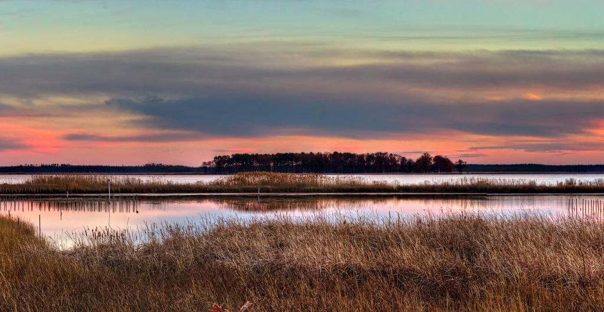

COASTAL INUNDATION PREDICTIONS FOR MARYLAND
Climate change, sea-level rise, and associated storms are putting Maryland’s people, property, natural resources, and public investments at risk. In a project funded by Maryland Sea Grant, a group of researchers from the University of Maryland Center for Environmental Science and Salisbury University have assessed the impacts of long-term sea level rise and episodic storm surge on coastal inundation over Maryland. Their research focuses on three high-risk areas: Eastern Shore of Maryland, Baltimore and Annapolis. Using climate downscaling projections from the latest climate models (IPCC CMIP5) to drive high-resolution regional atmosphere-ocean models, the researchers have investigated how sea level rise and a Category 2 storm like Hurricane Isabel (2003) generate flooding at the coastal sites in Maryland at 2050 and 2100. The numerical model outputs are combined with GIS information and LIDAR data to show the area extent, depth, duration of coastal inundation at the street level. This website displays 2D and 3D static and animated digital products depicting inundation risks in Baltimore, Annapolis and Maryland’s Eastern Shore in Google Maps and Google Earth.
This page contains interactive content for the maps of the Chesapeake bay area located in the Maryland/Delaware/Virginia area of the United States. To access the map and the gallery, you may use the navigation bar at the top of this page to choose where you wish to go. The Home button will redirect you to the page that you are currently on now. The Gallery button will redirect you to a page containing useful images to the project, and the map button will redirect you to a page where you may choose between a two or three dimensional map view. From there you may choose your year and scenario and view whichever map you please.
This page contains interactive content for the maps of the Chesapeake bay area located in the Maryland/Delaware/Virginia area of the United States. To access the map and the gallery, you may use the navigation bar at the top of this page to choose where you wish to go. The Home button will redirect you to the page that you are currently on now. The Gallery button will redirect you to a page containing useful images to the project, and the map button will redirect you to a page where you may choose between a two or three dimensional map view. From there you may choose your year and scenario and view whichever map you please.

